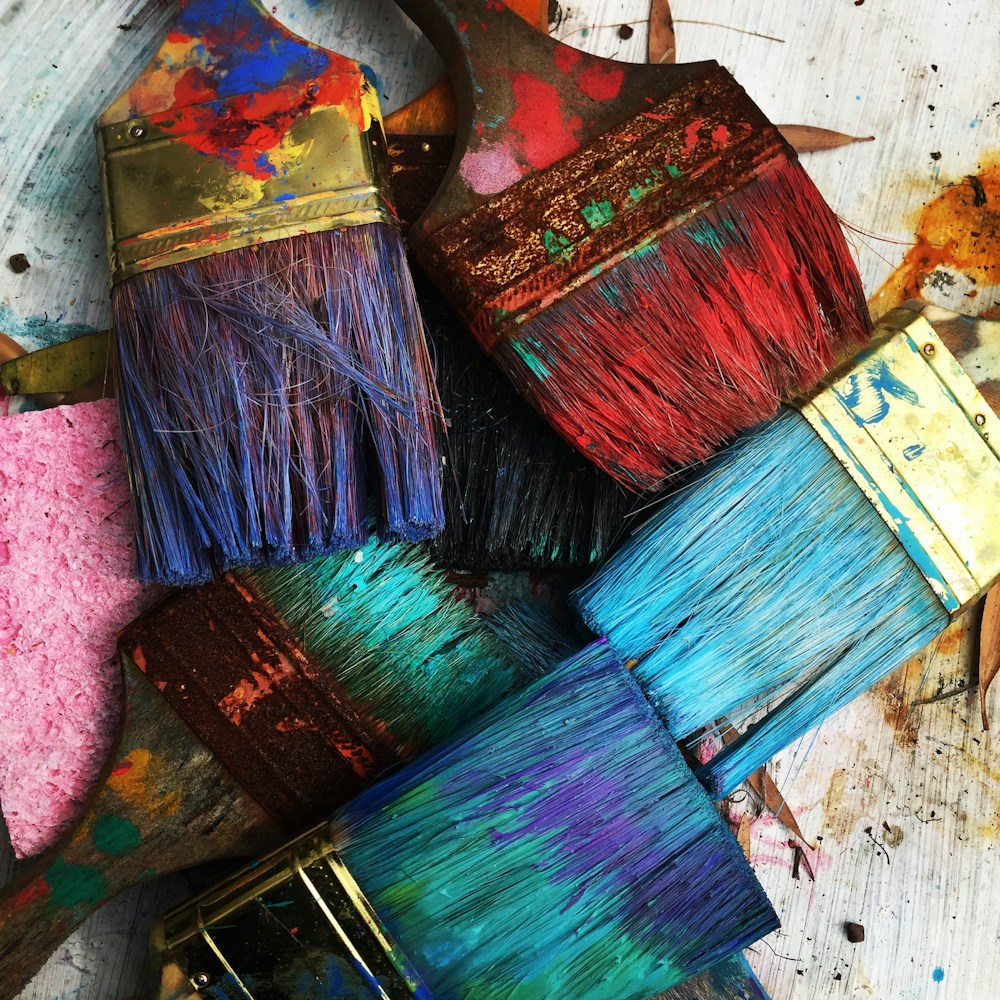

17 años
Tijuana, Baja California, México
Lectura, dibujo y una mirada a mi ciudad

¿Quién soy?
Mi nombre es Emiliano Lemus Pérez, tengo 17 años y vivo en Tijuana, Baja California. Soy estudiante de preparatoria y disfruto las actividades creativas. Me gustan la lectura, el dibujo, la fotografía y los proyectos donde puedo convertir una idea en algo que otras personas puedan ver o leer.
Me interesa observar los detalles que suelen pasar desapercibidos: los colores de un edificio, la forma de una calle o una conversación cotidiana. A veces tomo esas observaciones como punto de partida para escribir un texto breve o hacer un dibujo en mi cuaderno.
Mi personalidad y mis ideas
Soy una persona curiosa y paciente cuando trabajo en algo que me gusta. Disfruto pasar tiempo a solas para concentrarme, aunque también valoro mucho las conversaciones con amigos. Escuchar otras opiniones me ayuda a encontrar ideas diferentes para mis proyectos.
Me gustaría tener más seguridad al presentar mis trabajos frente a un grupo. Para mejorar, intento explicar el proceso que seguí y aceptar comentarios sin tomarlos como algo personal. Entiendo que aprender también significa revisar lo que ya hice y atreverme a cambiarlo.
Mis espacios para crear
Lectura y escritura
Me gustan los relatos cortos y los textos que plantean preguntas sobre la vida cotidiana. Escribo pequeñas historias y reflexiones para practicar cómo expresar una idea con claridad.
Dibujo y diseño
Dibujo objetos, edificios y personajes imaginarios. Me entretiene probar combinaciones de colores y distribuir los elementos de una portada o cartel escolar.
Fotografía y caminatas
En mis salidas observo luces, sombras y formas. Uso la fotografía como una manera de recordar lo que me llamó la atención, sin necesidad de que cada imagen sea perfecta.
La ciudad como inspiración
Me gusta que Tijuana tiene una identidad que cambia constantemente. En sus calles se mezclan historias de quienes nacieron aquí y de quienes llegaron desde otros lugares. Esa diversidad me parece una fuente de ideas para dibujar, escribir y aprender.
Me interesa visitar exposiciones en el CECUT y conocer actividades culturales de la ciudad. También disfruto una caminata en Playas de Tijuana para observar el paisaje. Me gustaría que más jóvenes tuvieran acceso a talleres de arte, lectura y fotografía cerca de sus colonias.